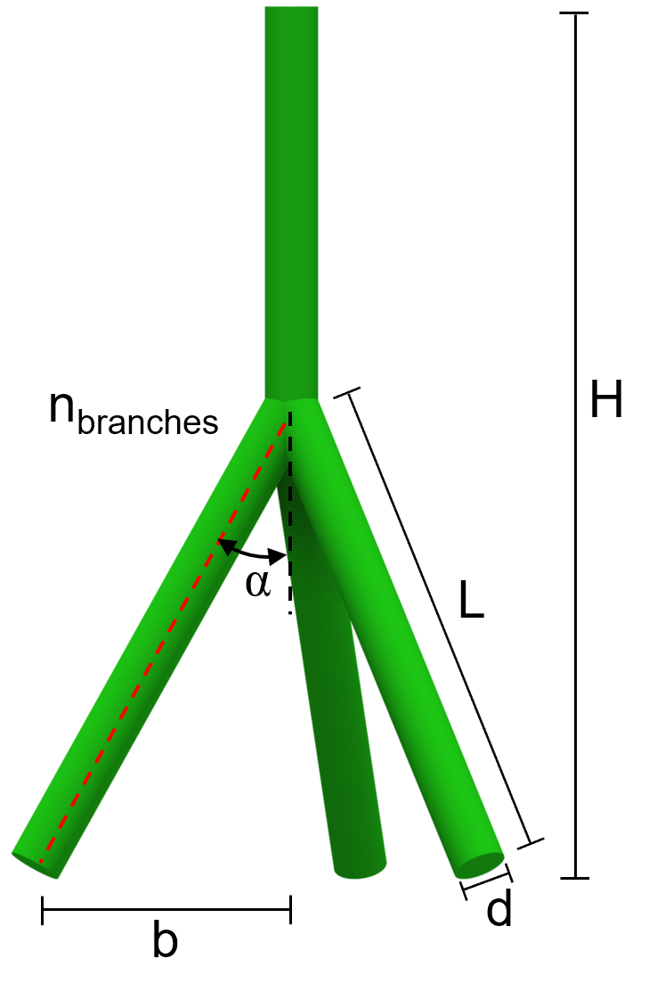

A project by Muhao Feng, Zhen Jiang, Yihua Xu; supervised by Seth Mallett, Mahdi Roozbahani

Just as the picture suggests, A wall separating two platforms has different elevations. The wall shown in the picture has a tendency to incline to the right because the mass on the left side of the wall is much greater. Therefore, we attach this root-inspired anchor model into the wall, which increases the resistance against the force on the left side.
During experiments, Dr. Mallet took steps of embedding the model into the soil, and then utilized machines to vertically pull up the anchor. After repetitive experiments using different models and particulates, approximately 200 data sets are collected.
We would like to figure out how different features contribute to the pullout capacity of our root-inspired Model. In other words, what features among all are the most significant to our model? How accurate can these relevant data predict the pullout capacity through various predictive models?
Number of branches ( n[count] ) Internal angle between the vertical and the branch ( α [°] ) Length of the branch ( L [mm] ) Total height of the model ( H [mm] ) Width, the distance from branch end to the vertical ( b [mm] ) Length of the stem ( Ls [mm] ) The cross-section diameter, perfectly circle ( d [mm] ) Radians between each branch, evenly distributed ( 2π/n [rad] ) Property of soil (Pullout force per cubic millimeter) ( γ [N/mm3] ) Displacement made by the pullout force ( δ(Pmax) [mm] ) The derivative of the force over displacement / maximum tangent stiffness value (max(ktan) [N/mm]) Soil weight above the branch (γAH' [N]) Volume of the model ( Vroot [mm3] ) Initial start pull force ( P0 [N] ) Soil Relative density ( DR [ ] ) Material Mean of the diameter of the sand ( d50 [mm] ) Strength of the soil, friction angle ( φ [°] ) Weight of soil’s length to the whole length ( f )
Maximum pullout force ( Pmax [N] )
The objective of this project is to develop a machine-learning-based method to predict and calculate the pullout force. To make this project more feasible to carry out, we will only use the features that are unique (not dependent on other properties). Our group implements different algorithms to yield the best prediction models.